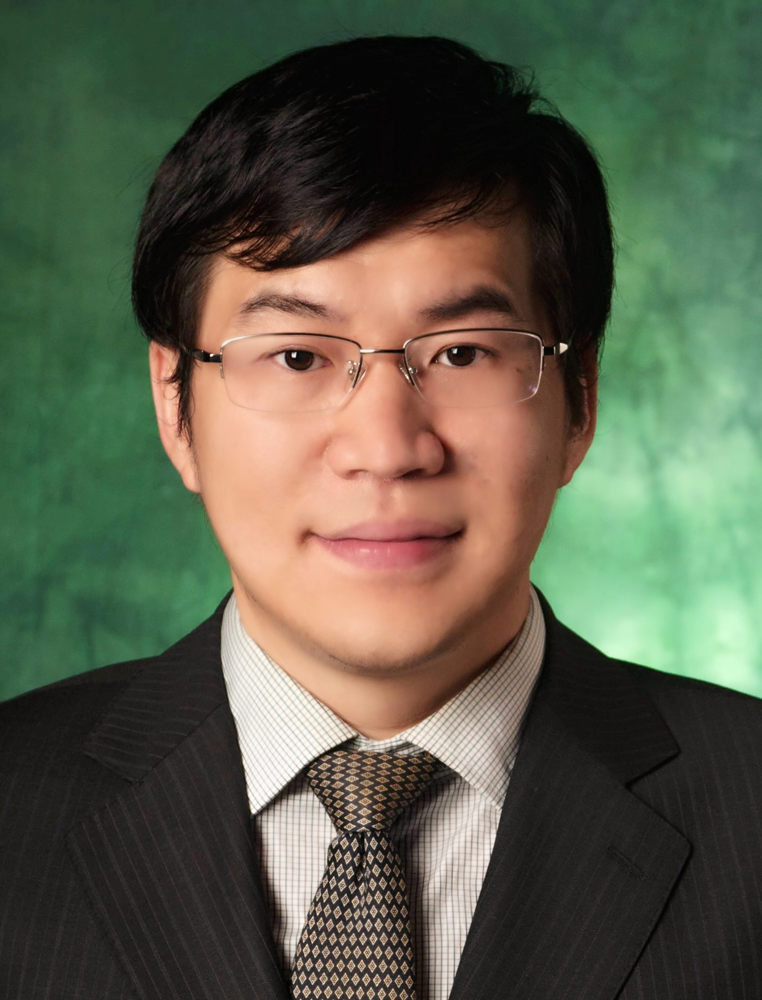

<!DOCTYPE html PUBLIC "-//W3C//DTD XHTML 1.1//EN"
  "http://www.w3.org/TR/xhtml11/DTD/xhtml11.dtd">
<html xmlns="http://www.w3.org/1999/xhtml" xml:lang="en">
<head>
<meta name="generator" content="jemdoc, see http://jemdoc.jaboc.net/" />
<meta http-equiv="Content-Type" content="text/html;charset=utf-8" />
<link rel="stylesheet" href="jemdoc.css" type="text/css" />
<title>Tao Yang (杨涛)</title>
<!-- MathJax -->
<script type="text/javascript" async src="https://cdnjs.cloudflare.com/ajax/libs/mathjax/2.7.1/MathJax.js?config=TeX-MML-AM_CHTML">
</script>
<script type="text/x-mathjax-config">
MathJax.Hub.Config({
	  TeX: { equationNumbers: { autoNumber: "AMS" } }
});
</script>
<!-- End MathJax -->
</head>
<!-- Default Statcounter code for github
https://tyang1188.github.io/ -->
<script type="text/javascript">
var sc_project=12025342;
var sc_invisible=1;
var sc_security="17e9e784";
</script>
<script type="text/javascript"
src="https://www.statcounter.com/counter/counter.js"
async></script>
<noscript><div class="statcounter"><a title="Web Analytics"
href="https://statcounter.com/" target="_blank"></a></div></noscript>
<!-- End of Statcounter Code -->
</body>
</html>
<table summary="Table for page layout." id="tlayout">
<tr valign="top">
<td id="layout-menu">
<div class="menu-category">Tao Yang</div>
<div class="menu-item"><a href="index.html" class="current">Home</a></div>
<div class="menu-item"><a href="bio.html">Biography</a></div>
<div class="menu-item"><a href="https://scholar.google.com/citations?user=9DTjZ_YAAAAJ&hl=en">Google&nbsp;Scholar</a></div>
<div class="menu-item"><a href="publications.html">Publications</a></div>
<div class="menu-item"><a href="teaching.html">Teaching</a></div>
</td>
<td id="layout-content">
<div id="toptitle">
<h1>Tao Yang (杨涛)</h1>
</div>
<table class="imgtable"><tr><td>
&nbsp;</td>
<td align="left"><p><b>Tao Yang</b> </p>
<p>Professor<br /> 
State Key Laboratory of Synthetical Automation for Process Industries <br />
Northeastern University <br />
Email:	yangtao [at] mail.edu.cn <br /></p>
</td></tr></table>
<h2>Research Interests</h2>
<p>His research interests include control, optimization, and learning with applications to process industries power systems. <br /> </p>
<h2>News </h2>
<ul>
<li><p>I joined the State Key Laboratory of Synthetical Automation for Process Industries, Northeastern University and am looking for highly motivated postdocs in the areas of control, optimization, and machine learning with applications to process industries and power systems. Please drop me an email if you are interested. </p>
</li>
</ul>
<ul>
<li><p>June 2019, together with Prof. Na Li at Harvard University, we are organizing a pre-conference workshop on &lsquo;&lsquo;Advanced Control and Optimization for Cyber-Physical Energy Systems&rsquo;&rsquo; at <a href="http://ccta2019.ieeecss.org/" target=&ldquo;blank&rdquo;>CCTA 2019</a>. Click <a href="http://ccta2019.ieeecss.org/workshops/" target=&ldquo;blank&rdquo;><b>here</b></a> for more information. Looking forward to seeing you.  </p>
</li>
</ul>
<ul>
<li><p>June 2019, our paper &lsquo;&lsquo;<a href="https://ieeexplore.ieee.org/document/8731737/" target=&ldquo;blank&rdquo;><b>Distributed optimal coordination for distributed energy resources over time-varying directed networks</b></a>" to appear in IEEE Transactions on Control of Network Systems.</p>
</li>
</ul>
<ul>
<li><p>May 2019, our paper &lsquo;&lsquo;<a href="https://www.sciencedirect.com/science/article/pii/S1367578819300082/" target=&ldquo;blank&rdquo;><b>A survey of distributed optimization</b></a>" to appear in Annual Reviews in Control.</p>
</li>
</ul>
<ul>
<li><p>May 2019, Congratulations to Lisha Yao and Wen Du for successful master thesis defenses! </p>
</li>
</ul>
<ul>
<li><p>April 2019, our paper on computational convergence analysis for distributed optimization algorithms has been accepted by <a href="http://uav.ece.nus.edu.sg/~icca19/index.html" target=&ldquo;blank&rdquo;>ICCA 2019</a>. Congratulations, Shengjun! </p>
</li>
</ul>
<ul>
<li><p>January 2019, Tao yang is a new member of the Conference Editorial Board (CEB) of IEEE Control System Society (CSS). </p>
</li>
</ul>
<ul>
<li><p>December 2018, together with Dr. Jianming Lian and Prof. Ye Yuan at HUST, we are organizing a Special Section on &lsquo;&lsquo;Control of complex networked systems (CCNS): Recent results and future trends&rsquo;&rsquo;.</p>
</li>
</ul>
<ul>
<li><p>July 2018, together with Prof. Jie Lu at Shanghai Tech, Prof. Wei Ren at UCR, and Prof. Angelia Nedich at ASU, we are organizing three invited sessions on distributed optimization for networked system at <a href="https://cdc2018.ieeecss.org/" target=&ldquo;blank&rdquo;>CDC 2018</a>. </p>
</li>
</ul>
<ul>
<li><p>July 2018, our papers on distributed optimization with event-triggered mechanisms have been accepted by <a href="https://cdc2018.ieeecss.org/" target=&ldquo;blank&rdquo;>CDC 2018</a>.  </p>
</li>
</ul>
<ul>
<li><p>June 2018, our paper on distributed finite-time optimization has won the Best Student Paper of the 14th IEEE International Conference on Control &amp; Automation (ICCA). Congratulations, Lisha! </p>
</li>
</ul>
<ul>
<li><p>June 2018, Tao Yang is a recipient of the 2018 Ralph E. Powe Junior Faculty Enhancement Award. <a href="https://www.orau.org/university-partnerships/member-grant-programs/powe/index.html/" target=&ldquo;blank&rdquo;><b>Announcement</b></a>. <a href="https://news.unt.edu/unt-electrical-engineering-assistant-professor-earns-prestigious-powe-award/" target=&ldquo;blank&rdquo;><b>UNT News</b></a>.</p>
</li>
</ul>
<ul>
<li><p>April 2018, we are organizing a special issue on distributed optimization and learning for networked systems in the IET Control Theory and Applications. Click <a href="https://digital-library.theiet.org/files/IET_CTA_CFP_DOLNS_SI.pdf/" target=&ldquo;blank&rdquo;><b>here</b></a> for more information.  </p>
</li>
</ul>
<ul>
<li><p>April 2018, our paper on distributed finite-time optimization has been accepted by <a href="http://uav.ece.nus.edu.sg/~icca18/anchorage.html/" target=&ldquo;blank&rdquo;>ICCA 2018</a>. Congratulations, Lisha! </p>
</li>
</ul>
<ul>
<li><p>February 2018, our paper on accelerated distributed energy management for microgrids has been accepted by PESGM 2018. Congratulations, Wen and Lisha!  </p>
</li>
</ul>
<ul>
<li><p>January 2018, together with Dr. Jianming Lian at PNNL, we are organizing a pre-conference workshop on &lsquo;&lsquo;Interdisciplinary Approaches for Control of Large-scale Complex Systems: Latest Development and Future Trends&ldquo; at ACC 2018. Click <a href="http://acc2018.a2c2.org/technical-program/workshops/" target=&rdquo;blank"><b>here</b></a> for more information. </p>
</li>
</ul>
<ul>
<li><p>July 2017, together with Prof. Na Li at Harvard University and Prof. Karl H. Johansson at KTH, we are organizing an invited session on Control and Optimization for Emerging Power Networks and our paper on Cooperative Optimal Coordination for Distributed Energy Resources has been accepted by <a href="http://cdc2017.ieeecss.org/" target=&ldquo;blank&rdquo;>CDC 2017</a>.</p>
</li>
</ul>
<ul>
<li><p>July 2017, our <a href="https://ieeexplore.ieee.org/document/7961194/" target=&ldquo;blank&rdquo;>paper</a> on distributed optimization over lossy communication networks with application to distributed energy resource coordination has appeared in IEEE Transactions on Smart Grid.  </p>
</li>
</ul>
<div id="footer">
<div id="footer-text">
Page generated 2019-09-17 19:47:54 CST, by <a href="https://github.com/wsshin/jemdoc_mathjax" target="blank">jemdoc+MathJax</a>.
</div>
</div>
</td>
</tr>
</table>
</body>
</html>
